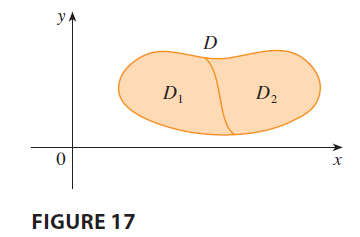

General regions the properties follow from Definition.
\[ \iint_D [f(x, y) + g(x, y)] dA = \iint_D f(x, y) dA + \iint_D g(x, y) dA \tag{6} \]
\[ \iint_D cf(x, y) dA = c \iint_D f(x, y) dA \quad \text{where c is a constant} \tag{7} \]
If \(f(x, y) \ge g(x, y)\) for all \((x, y)\) in \(D\), then
\[ \iint_D f(x, y) dA \ge \iint_D g(x, y) dA \tag{8} \]
The next property of double integrals is similar to the property of single integrals given by the equation \(\int_a^c f(x) dx = \int_a^b f(x) dx + \int_b^c f(x) dx\). If \(D = D_1 \cup D_2\), where \(D_1\) and \(D_2\) don’t overlap except perhaps on their boundaries (see Figure 17), then

\[ \iint_D f(x, y) dA = \iint_{D_1} f(x, y) dA + \iint_{D_2} f(x, y) dA \tag{9} \] Property 9 can be used to evaluate double integrals over regions \(D\) that are neither type I nor type II but can be expressed as a union of regions of type I or type II. Figure 18 illustrates this procedure.